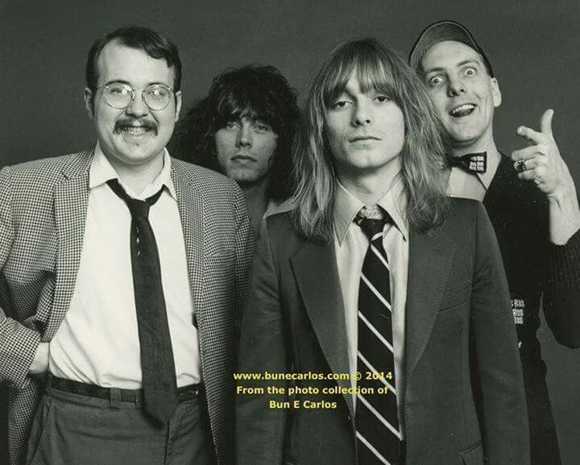

CHEAP TRICK
Cheap Trick is a rock band originally from Illinois. They formed in 1974. The members include Robin Zander, Rick Nielsen, Tom Peterson, and Daxx Nielsen. They are known for almost continuously touring, and have performed almost 5,000 shows. The Cheap Trick album was released in 1977 for Epic Records produced by Jack Douglas.
The album cover was designed by Paula Scher . She worked for Atlantic Records in the early 70’s as the art director where she designed album covers for the label. Scher designed record covers for Boston, Eric Gale, and Lenoard Bernstein among others. Paula Scher eventually went on to become a principal at Pentagram, where she currently works now. She also currently is a professor at SVA.
